新智元报道
新智元报道

大模型江湖变天了。
9月21日，小米MiMo团队正式发布并全面开源新一代MiMo V2.6系列，一口气端出三款模型——Pro、Flash、Ultraspeed，直接改写全球开源模型的格局。
MiMo V2.6 Pro在Artificial Analysis智能指数（AA Intelligence Index v4.3）中拿下 46 分，超过Kimi K3和Qwen3.8 Max。
全球开源模型第一、国产模型第一！
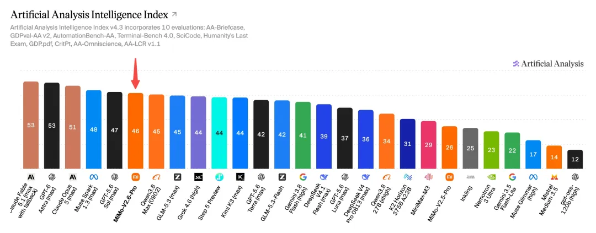
拉出AA榜单横着看：Fable 5.1得分53，GPT-6 Astra得分52.8，Opus 5得分50.7。
MiMo V2.6 Pro虽然还没追平这几位「天花板」，但已经稳稳站进全球顶尖第一梯队，把其他所有开源模型甩在身后。
更狠的是，价格维持V2.5不变。
同样的钱，智能翻倍，直接画出一条新的「智能-成本」帕累托前沿。
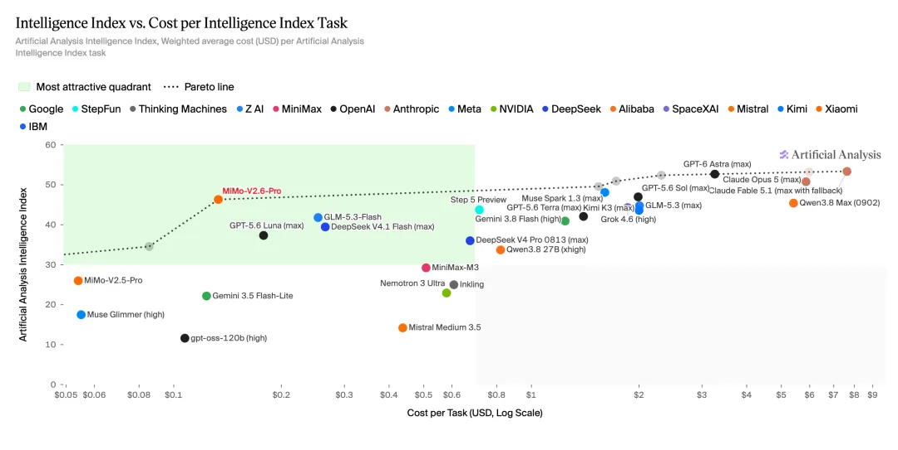
别人还在打「斩杀线」的价格战，小米这一刀，直接把游戏桌掀了。
正好，小米大模型负责人罗福莉也在X上发了一篇长文——《The Hard Road to Scaling Up RL》。
她说MiMo V2.6很可能是开源世界迄今最大规模的单次RL训练，几十人团队把所有算力押在一件事上：强化学习究竟能扩展多远。
她甚至直言，这次RL的研究创新和工程挑战甚至「超过了DeepSeek R1」。
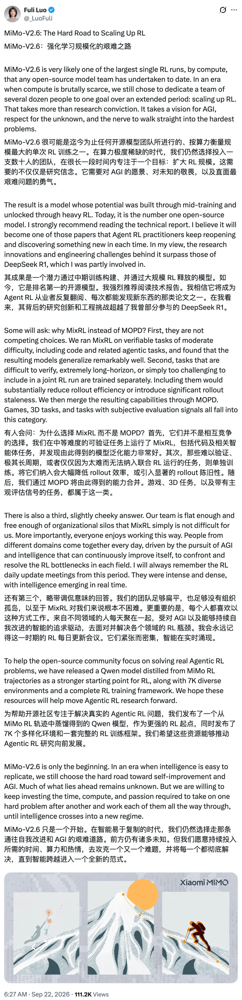
更巧的是，就在同一天，马斯克旗下 SpaceX的Grok 4.7也同步发布，马斯克兴奋转发。
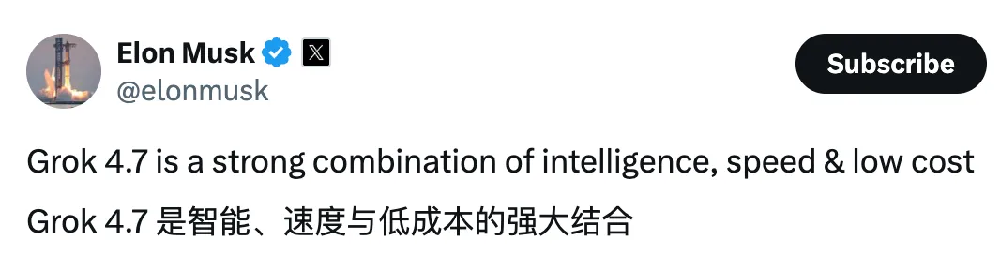
但X上的风向转得比飞机还快。
AI博主Chubby（@kimmonismus）先夸了Grok 4.7，随后秒纠正——
真正该看的是MiMo V2.6。
他改口称：Better than Grok 4.7, much cheaper, and holy moly is China back!（比 Grok 4.7 更强，价格还便宜得多，我的天，中国回来了）
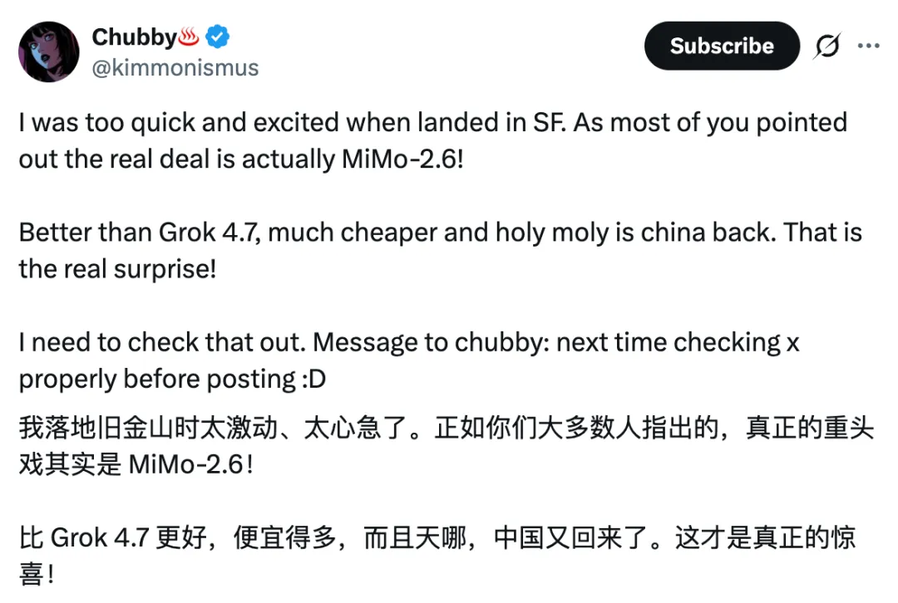
AA Intelligence Index上两者同为46分，但MiMo V2.6 Pro单任务成本0.13美元，Grok 4.7要3.74美元——近30倍差距。
同分，开源，全模态，便宜30倍。
社区的共识就五个字：又好又便宜。

MiMo V2.6是一个系列。针对不同工作场景，三款模型各司其职：
MiMo V2.6 Pro，是整个系列的绝对旗舰。
全模态、超高性能，覆盖复杂项目、长程任务、高价值工作，甚至能啃网络安全和科研的硬骨头。
放眼开源世界，它是唯一一个同时做到全模态和旗舰性能的模型。
AA智能指数46分，就是它交出的成绩单；在多数Agent Benchmark上，它已经能比肩Opus 5和GPT-5.6 Sol。
在Design Arena的排名更加细致地暴露了它的实力。
Chat综合场景中，MiMo V2.6位列开源模型第3、总榜第8，超过Claude Opus 5；
在Chat场景中使用频率最高的Website类别，开源第2、总榜第4，超过Opus 5、Fable 5和GPT-5.6 Sol；
在面向Agent的Web Apps前端开发场景中，开源第2、总榜第6，超过Kimi K3、Fable 5、Opus 5和GPT-5.6 Sol。
请注意，被它超越的那些名字——Opus 5、Fable 5、GPT-5.6 Sol。每一个都是各家公司几百亿美元投下去的闭源旗舰。
一个开源模型，在真实的开发者投票场景中把它们踩在了脚下。
来看一个前端设计实例。
衬线大标题、克制的留白、左侧竖排章节导航、右侧带图注的沙漠影像，整体像一本印刷杂志而不是一个模板堆出来的网页。
MiMo V2.6 懂得「什么叫好看」。
MiMo V2.6 Flash，走的是「效率怪兽」路线。
全模态、高智能、低成本，专为专业办公中的高频调用和规模化任务设计。这一代Flash，已经全面超越上一代旗舰V2.5 Pro。
如果你每天要让模型跑几万次任务，Flash就是那个不心疼Token账单的最佳搭档。
MiMo V2.6 Pro Ultraspeed，则是给「高效率」的人准备的。
它保留了Pro的旗舰级性能——注意，不做量化，不因速度牺牲智能，同时提供最高10倍推理速度，常态500 TPS，峰值可达1000 TPS。
3倍价格换10倍速度，对于强实时交互和对响应速度敏感的生产场景来说，这笔账怎么算都划算。
榜单成绩只是入场券，真正让开发者买单的是实战能力。
MiMo V2.6在几个关键场景中的表现，验证了它不是为跑分而生的「应试选手」：
游戏开发。这是MiMo V2.6生成的一个可交互的3D开放世界——
远处金字塔与宣礼塔勾勒天际线，近处密集的沙色民居、木质脚手架和错落屋顶铺满整个视野，镜头推拉时帧率稳定、没有明显掉帧和穿模。
它不只是「画」出了一个场景，而是把场景层级、资产复用和渲染性能一起算清楚了。
更难得的是审美的统一：整座城市在中东古城的色彩和建筑语法里保持一致，没有拼贴感。
复杂3D场景建模。这是考验模型长程推理和细节控制能力的终极战场。
MiMo-V2.6 可以根据用户的文本描述或参考图像在 Blender 中生成 3D 对象和场景。
让它生成的一辆皮卡的线框3D模型。车身轮廓、轮毂辐条、底盘纵梁和车厢挡板全部由程序化几何体构成，旋转时各部件的空间关系严丝合缝，还在一直在变换颜色。
MiMo V2.6在这类任务上的空间推理和细节控制，已经不输旗舰闭源模型。
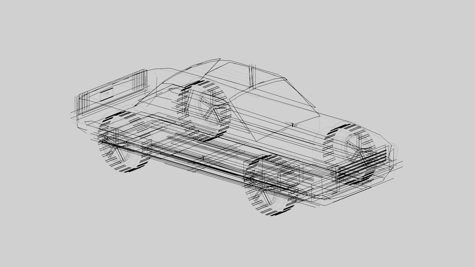
多模态输入生成Office文档。
这是MiMo V2.6生成的一份「关键矿产」基金路演幻灯片，封面就透着一股投行研报的克制感：大字号黑体中文标题压住版面，赭红色英文副标和一条短横线做点睛，四个议题用间隔点排成一行，底部一张智利Chuquicamata铜矿的阶梯矿坑全景图直接把主题「砸」在观众眼前。
更难得的是文字组织，说明模型不只是在排版，而是先想清楚了这份材料给谁看、怎么讲，这是一个真正懂路演逻辑的「分析师」才会有的自觉。
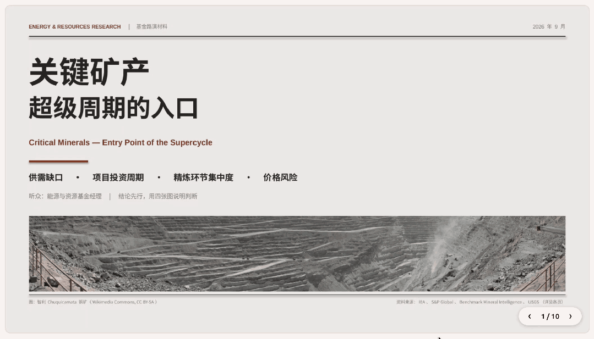
新材料研发「Co-Scientist」。小米前沿材料团队用MiMo V2.6 Pro做了一件正经的科研任务：设计一种能从水中捕获PFAS（全氟和多氟烷基物质，俗称「永久性污染物」）的新型金属有机框架材料（MOF）。
注意，这是一个端到端的科研闭环——从文献与专利综述、提出设计假设并验证新颖性，到自动搭建计算模拟环境、调用开源工具进行「干法实验」，最终筛选出候选材料方案。
模型设计的A50和B50两种MOF结构，在模拟中对PFAS的吸附性能达到了参照材料的百万到千万倍。
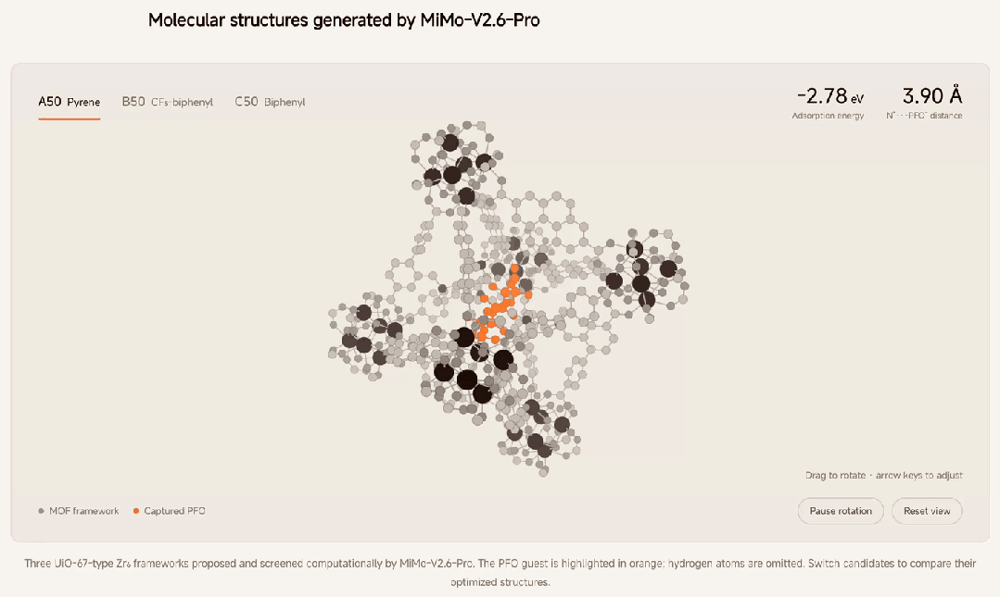
整个流程，人类专家的工作效率提升约10倍，原本需要一个月的研发周期被压缩到2—3天。
北京大学材料科学与工程学院特聘研究员窦锦虎教授评价：「它在这次任务中展现出的研究能力，已经达到了训练有素的博士研究人员的水平。」
一个开源大模型，开始像一个真正的科研工作者那样工作了。
而且，V2.6有一个被低估的优势：单轮交付速度极快。
在复杂多步任务中，同等时间内MiMo可以完成更多迭代轮次，结果更可控。
如果你习惯了「提需求→等半天→看到一个不满意的结果→再改→再等」的工作流，V2.6的速度会让你重新定义什么叫「人机协作」。
这是整个V2.6最让人好奇的问题——
预训练基座没有变，参数没有变，凭什么智能水平能跃升到「全球开源第一」？
答案藏在四个字里：后训练革命。
小米官方给这次发布的定位：探索RSI（递归自我改进）路径的关键一步——
以可验证的复杂任务为基础，规模化扩展RL算力，让模型在持续的探索与反馈中，自己把智能边界一点点往外推。
小米MiMo大模型负责人罗福莉，在9月17日发了一条让整个AI社区炸锅的推文。阅读量冲到了三百万。
她说团队沉寂了近半年，只研究一件事：强化学习究竟能扩展到多远。然后，她做了一件前所未有的事：把MiMo V2.6的RL训练过程全程直播。
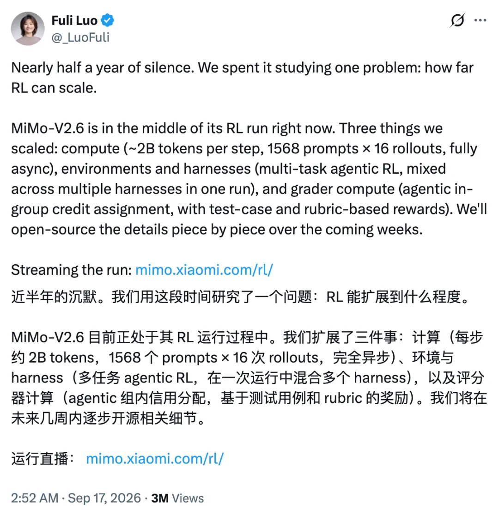
不到6天，Flash和Pro两个模型各跑完30步，累计约75万条轨迹，训练成本分别约85万和262万美元。
所有数据实时挂在 mimo.xiaomi.com/rl 上，全世界的研究者都能看到训练曲线一步步攀升。
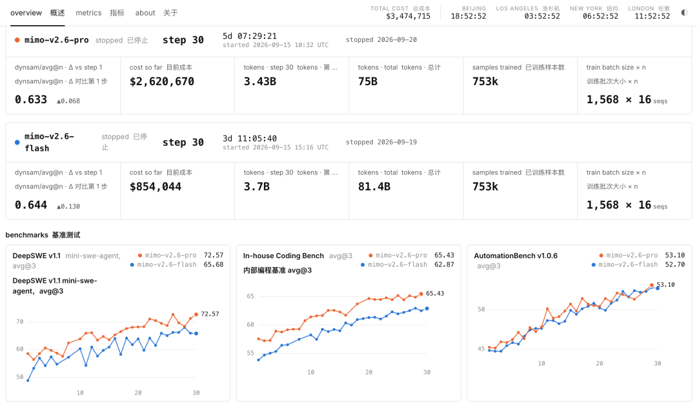
这波操作直接把海外AI社区看懵了。
Nathan Lambert评价说这是「迄今为止公开的最酷的大规模RL资源之一」。
还有人感慨：「想象一下如果OpenAI和Anthropic也这么干。」
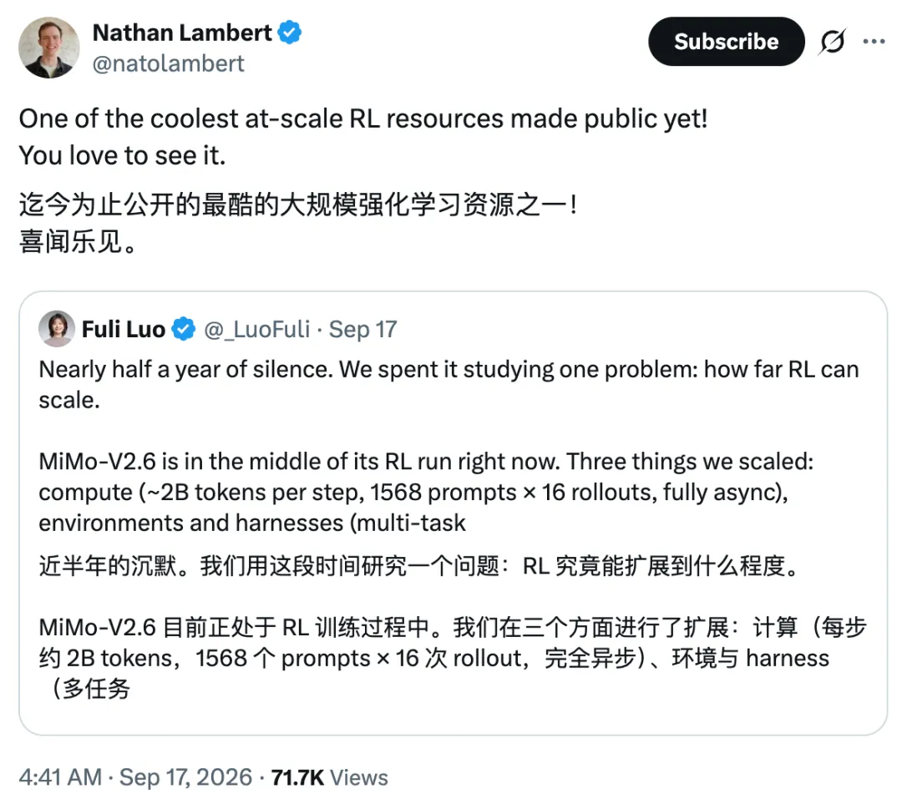 | 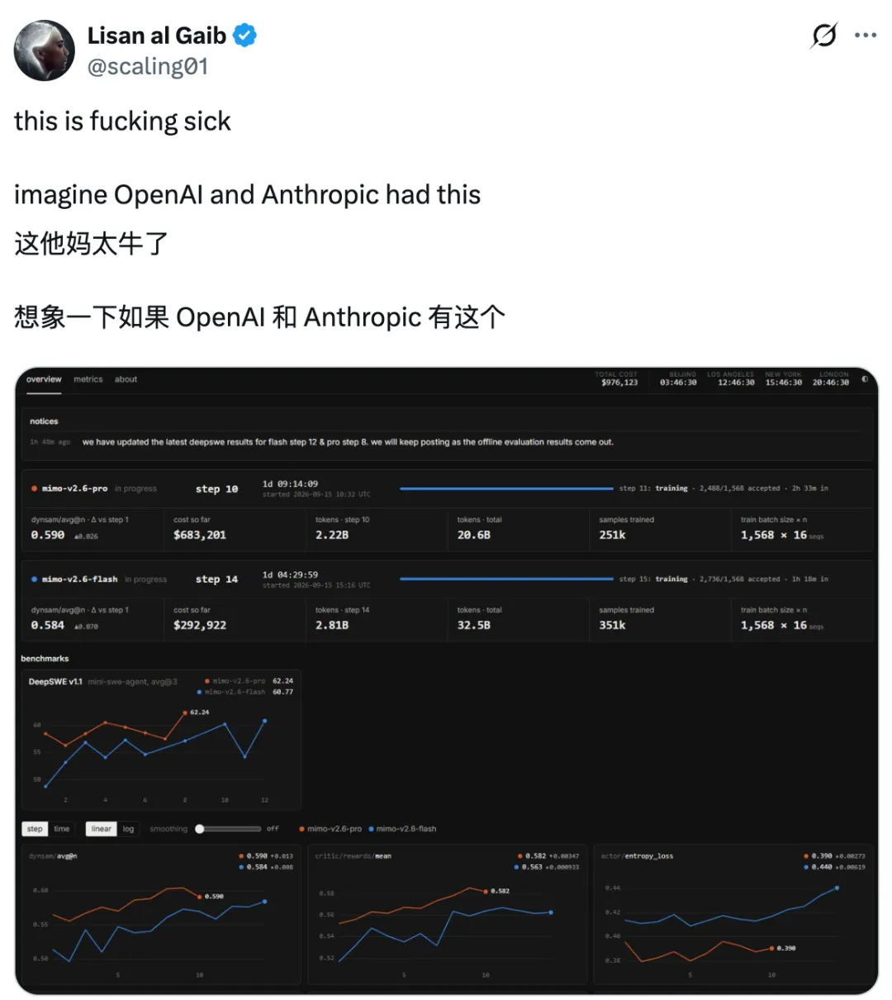 |
直播的成绩单也很硬：两个模型的训练任务平均通过率分别相对提升25%和12%；更关键的是样本外——在没参与训练的长程软件工程基准DeepSWE v1.1上，Flash从48.8涨到65.68，Pro从58.4涨到72.57。
30步，十几分。RL的样本效率、持续改进能力和泛化能力，全摆在了明面上。
但直播只是表象，真正的核心技术是MixRL——混合任务强化学习。
罗福莉把这套方法论浓缩为一句话：You Only RL Once。一次大规模混合任务RL，就能让模型在各个方向上同时涌现能力，不需要针对每个任务分别训练。
MiMo V2.6的后训练不是简单地「多练几轮」，而是沿着三个轴同时扩展，形成一个「环境 × 任务 × 评分器」三轴协同的自我改进系统：
第一轴：Rollout计算——练得够不够多。
每个训练步骤使用1568个Prompt，每个Prompt进行16次Rollout，单步训练Token达27亿～37亿，支持1M上下文长度训练，完全异步执行。
这是在用4000块GPU铺开一张巨大的「刷题网」，让模型同时面对25000条轨迹，用海量的试错来逼近最优解。
为什么偏偏是16次？这背后是GRPO算法的组内比较逻辑——只做一次尝试，反馈只有「对或错」；做16次，系统就能通过组内比较得到更丰富的相对信号，区分「碰巧蒙对」和「真正理解」。16，是成本和信号质量之间的甜蜜点。
而「完全异步」四个字，藏着一个关键的工程洞察。
传统同步RL像一场全班统考：所有GPU先一起生成答案，再一起评分，再一起更新模型，必须等所有人交卷才开始下一轮。
问题是Agent任务耗时差异巨大，有的5分钟跑完，有的要好几个小时。同步模式下，快的GPU只能干等慢的。
MiMo V2.6把生成、评分、训练拆成连续流水线，哪条轨迹先跑完就先评分、先学习。不等任何人交卷。
第二轴：环境与Harness——见得够不够广。
传统RL只让模型在单一任务上练，MiMo V2.6把编程、通用办公、视觉设计、网络安全等多种Agent任务混在一起训练。
技术报告透露了精确的「配方」：编程占68%、通用Agent占12%、视觉设计占13%、网络安全占4%、指令遵循占3%，横跨25个数据源、21种Harness框架，在一次RL训练中全部混合。
这不是简单地「什么都练一遍」，每个领域都有专门的质量把关机制。
编程任务建立了三重质检——只校验原始需求（不鼓励过度修改）、每题重复执行8次确保一致性、独立审计Agent交叉验证。
网络安全方向直接用OSS-Fuzz的真实漏洞做训练环境，评分基于标准答案的漏洞类型和崩溃位置进行纯规则匹配，杜绝评分被「忽悠」。
视觉设计分两类：开放式设计先按规则检查可运行性、指令遵循、布局和基本美学，再在同组方案中横向比较；高保真复制主要靠像素级等相似度指标，辅以 LLM 整体评判。
技术报告里详细描述了他们如何构建上千个高质量环境——从GitHub PR到金融法律文档分析，从网站复刻到漏洞复现，每个环境都有本地执行、可重置、与真实专业场景对齐的特性。
第三轴：Grader计算——反馈够不够准。
这是最容易被忽视但可能最关键的一环。
V2.6不满足于简单的「做对了给1分、做错了给0分」，而是把评分过程本身做成了一个Agent。
具体来说，MiMo设计了两套评分体系：简单任务用离线Rubric按预设维度逐项打分，效率优先；复杂长链路任务则启动在线的Agentic Grader，在同一组16条Rollout中横向对比所有方案，做「组内排名+信用分配」。
这个Agentic Grader会从五个维度进行细粒度评分：方案是否恰当、修改是否精准、改动是否最小化、有没有引入副作用、工程质量是否过关。
它甚至能识别出「虽然通过了测试但其实是投机取巧」的方案，把奖励重新分配给真正高质量的解法，并引导模型用更短的路径、更少的Token把任务做完。
换句话说，MiMo做了一个反常识的决定：在评分环节也大量投入算力。
传统观点认为算力应该全花在「让模型多练」上，但小米发现，精细的评分信号能让每一步训练都更有效率。方向，比速度重要。
技术报告里一张对比图很能说明问题：在没有Grader的训练中，模型的对话轮数和Token消耗量不受控制地膨胀，通过率很快见顶；有了Grader之后，模型保持稳定的轮次控制，通过率持续攀升到第52步还在涨。
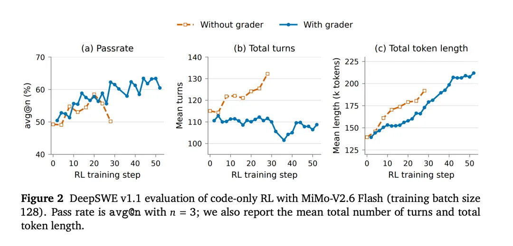
更有意思的是，没有Grader训练出来的策略倾向于写臃肿的「万能补丁」。
什么兼容性分支、异常吞噬、放松校验，只为了通过测试；而Grader训练出的策略，生成的代码更精准、更简洁、更容易维护。
三轴同时发力，构成了一个自我改进的闭环：
模型的策略产生多条轨迹→Grader从中提取精细的质量信号→质量信号引导模型向更好的策略进化→进化后的策略产生更高质量的轨迹。
如此循环，智能水平实现跃迁。
这就是RSI在工程上探索的样子：不靠人喂，靠模型在反馈里一次次试错、自己学会。
但三轴扩展只是硬币的一面。
另一面是：把这么多不同类型的任务混在一次RL中跑，最大的挑战不是「怎么跑」，而是「怎么不翻车」。
MiMo团队为此建了一整套稳定性基建。
Sample Mixer调度器负责动态平衡——5个领域、25个数据源，任务耗时差异高达56倍，数据量差异高达159倍，需要四层调度系统实时调配采样比例，保证每个方向都不被饿死、也不被撑爆。
底层还把控制面与数据面解耦，撑得住海量轨迹在多种Agent框架间的高并发流转。
Router冻结保证训练一致性。MoE架构下每个词由384个专家中的8个处理，RL过程中如果专家路由频繁漂移，模型就会不稳定，因此小米选择在RL阶段锁死路由。
还有Reward Hacking三层防线。
RL训练中，模型天然会「寻找捷径」：翻环境里的参考答案、联网搜上游修复、写糊弄测试的代码。
小米的对策层层递进：环境消毒（删日志、残留补丁、编译产物，容器断网，git历史截断到对应commit），对抗筛查（专职hack agent拿已知攻击手法主动找漏洞，发现→修复→再打，直到找不到为止），持续审计（定期离线分析轨迹，识别新型作弊手法）。

过去半年，大模型行业最热闹的话题之一就是「斩杀线」。
一条由性价比最优模型画出的价格曲线，谁被这条线压在下面，谁就失去了存在的意义。各家厂商轮番降价，试图把自己的模型推到这条线上方。
MiMo V2.6的做法更简单粗暴：智能翻倍，价格不变，直接画一条新线。
旗舰档对比一目了然：MiMo V2.6 Pro的三项价格（缓存、输入、输出）全面最低。相比Opus 5和GPT-5.6 Sol，缓存价格低约99%，输入价格低约89%，输出价格低约95%以上。
效率档也是同样的故事：MiMo V2.6 Flash与DeepSeek V4.1 Flash闲时输入价格接近，但输出价格低50%。
Artificial Analysis第一时间给出了数据：MiMo V2.6 Pro实测单任务成本仅0.13美元，首次将全球前沿智能带入0.1美元区间。
换算到同等智能水平，MiMo V2.6 Pro的价格只有海外模型的1/20到1/60。
说白了，在「智能-成本」的帕累托图上，能逃出MiMo V2.6斩杀范围的模型，预计只剩下Fable 5.1、Fable 5、GPT-6、GPT-5.6 Sol、Opus 5和Muse Spark 1.3这寥寥几个。
而它们无一例外都是闭源的、定价高得多的旗舰模型。
很多人可能会问：小米做大模型才多久，怎么突然就冲到全球第一了？
答案是，这不是「突然」。
回顾MiMo的技术路线，你会发现「效率」这个词像一条暗线贯穿始终——
25 年 12 月的 MiMo-V2 和 26 年 4 月发布的 V2.5，通过MoE稀疏激活、滑动窗口注意力、多Token预测和推理系统协同，在扩大模型容量和上下文能力的同时，把实际激活计算、KV Cache和生成延迟全部压下来。
V2.5-Pro的UltraSpeed版本在单台标准8卡GPU节点上突破1000 tokens/s输出速度，官方称「首次在不牺牲智能、不依赖定制芯片的前提下」实现。
V2.5在Agent基准ClawEval上取得相近成绩的前提下，比Kimi K2.6少用42% Token，比Meta Muse Spark少用50% Token。
而且，市场已经给出了真金白银的投票：2026年7月，MiMo V2.5登顶OpenRouter全球模型调用量月榜、周榜双料第一，单周调用量突破10万亿Token。
一个开源模型，在全球最大的模型API聚合平台上打败所有闭源竞品，靠的不是营销，而是开发者用脚投出来的结果。
MiMo V2.6，正是这条效率路线的阶段性闭环：前两代积累的高效架构降低了长轨迹成本，更快的推理速度扩大了RL探索规模，更丰富的环境与Grader提高了任务成功率。
增长后的能力又通过同一套高效系统，以更低成本、更高速度交付。
飞轮一旦转起来，越转越快。
小米MiMo V2.6用一个全程直播的RL训练、一套「环境×任务×评分器」三轴协同的自我改进系统、一张全球开源第一的成绩单，证明了——
强化学习可以扩展到很远，开源模型可以站到很高，技术效率可以创造真正的帕累托最优。
编辑：所罗门